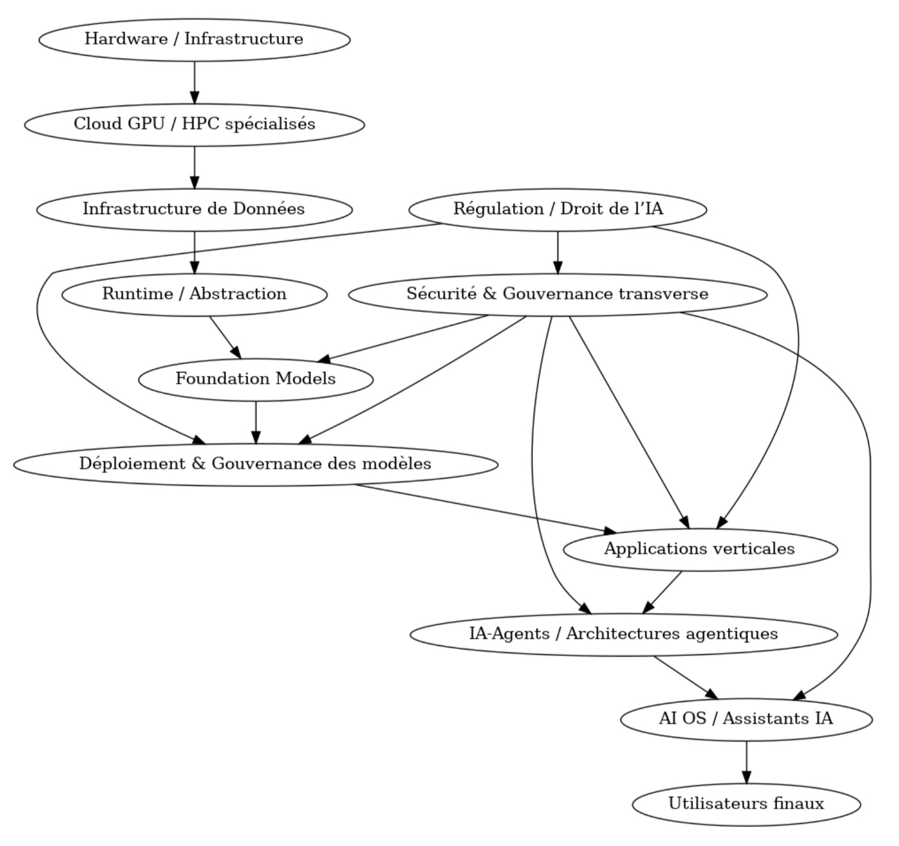

Schéma de consommation de l’IA
Rôle des acteurs industriels
La révolution IA ne se contente pas d’automatiser ou d’amplifier des usages existants. Elle crée, à chaque niveau de sa chaîne, des formes de valeur inédites, qui redéfinissent le rôle des acteurs industriels, le tissu économique et les besoins assurantiels. Cette valeur ne réside pas uniquement dans la puissance de calcul ou dans les modèles eux-mêmes, mais dans la capacité à structurer, articuler et sécuriser l’ensemble du cycle de vie d’une intelligence numérique. Chaque couche de cette architecture industrielle délivre une valeur propre, activée par ses clients directs, dont le rôle est d’absorber cette capacité brute pour en extraire un potentiel exploitable, reproductible, gouvernable.
À la base, le hardware IA fournit la matière première énergétique et computationnelle. Cette puissance est captée par les fournisseurs de cloud GPU, qui l’agrègent, l’optimisent, la rendent disponible à la demande. Leur valeur réside dans l’industrialisation de la ressource, auparavant réservée à des centres de recherche étatiques ou à des supercalculateurs de défense. En la rendant accessible, ils rendent possible l’émergence d’une économie IA décentralisée.
Sur ces fondations, les spécialistes du cloud HPC et des fermes GPU spécialisées créent un pont opérationnel entre puissance et usage. Leur valeur repose sur l’activation massive de cette puissance au service de cas d’usage IA, via une gestion fluide des charges de calcul, une mutualisation fine, et une orchestration dédiée à l’inférence comme à l’entraînement. Ils rendent l’intelligence calculable, disponible, exploitable.
Vient ensuite l’infrastructure de données, où les clients (modeleurs, data scientists) transforment le chaos informationnel en actifs d'entraînement. Ici se construit une valeur invisible mais fondamentale : la qualité, la traçabilité, la diversité des données conditionnent la pertinence du raisonnement algorithmique. À ce niveau, la valeur IA devient épistémique : ce n’est plus une question de force, mais de sens.
Les couches de runtime et d’abstraction injectent un levier d’accélération. Elles permettent de piloter des flottes de modèles, de containeriser leur déploiement, de fluidifier les itérations. Le client de ces couches valorise la complexité par l’automatisation. La valeur créée est temporelle et industrielle : il s’agit de produire plus vite, à plus grande échelle, sans sacrifier la robustesse.
Les modèles fondation, quant à eux, apportent une forme inédite de valeur générique : des intelligences réutilisables, adaptables, transférables, sans spécificité métier initiale. Les intégrateurs, développeurs et plateformes les consomment pour produire des IA contextualisées, orientées métier. La valeur devient ici cognitive : une intelligence brute est rendue apte à comprendre, reformuler, dialoguer, générer, simuler.
C’est ensuite que naît la valeur métier directe. Les couches de déploiement et gouvernance permettent une exploitation en continu, conforme, traçable. C’est la valeur de confiance : les entreprises utilisatrices obtiennent des IA maîtrisées, dont les comportements sont régulés, observables, ajustables.
Les applications verticales transforment cette IA en outil d’aide à la décision ou à l’action. Médecins, juristes, formateurs s’appuient désormais sur des IA pensées pour leur cœur de métier. La valeur est ici productive, tangible, liée à des gains de performance, de temps, de fiabilité.
À mesure que l’on s’élève, les agents IA puis les AI Operating Systems orchestrent l’intelligence en réseau. Ces entités permettent à plusieurs IA de coopérer, raisonner, se relayer. Leurs clients construisent des architectures complexes, autonomes, capables d’agir sur des chaînes entières de valeur. On entre ici dans une valeur systémique : les IA ne sont plus des outils, mais des opérateurs autonomes, capables de scénariser des décisions à plusieurs niveaux.
Enfin, la sécurité et la régulation n’agissent pas en support, mais en activateurs de valeur durable. Sans elles, pas de confiance, pas d’adoption. Leurs clients – intégrateurs, RSSI, juristes, régulateurs – injectent des mécanismes de contrôle, d’alerte, de responsabilité. La valeur assurantielle prend corps : elle garantit que l’intelligence reste alignée, encadrée, légitime.
Et au bout de la chaîne, l’utilisateur final – professionnel ou consommateur – est le catalyseur ultime de cette valeur. C’est par son usage, son retour, sa satisfaction, que l’IA prouve son utilité, qu’elle entre dans le réel. La valeur devient ici sociétale : elle transforme des promesses algorithmiques en pratiques quotidiennes.
Cette typologie marque une rupture : aucune technologie précédente n’a produit une telle diversité de valeurs — computationnelle, épistémique, cognitive, productive, systémique, assurantielle, sociétale — ni une telle profondeur de dépendance entre les couches. Elle appelle à une lecture nouvelle des risques, des responsabilités, et des formes d’assurance à inventer pour que cette valeur, immense, reste maîtrisée.
Chaîne d’approvisionnement de l’IA

Chaîne de valeur de l’IA
Cette chaîne de valeur met en lumière ce que l’IA apporte de singulier : des formes de création de valeur qui n’existaient pas jusqu’ici, car nées de sa capacité à modéliser, prédire, générer, automatiser et orchestrer à grande échelle. À la base, la puissance de calcul ne crée pas seulement de la performance technique : elle permet l’émergence de modèles cognitifs capables d’apprendre seuls, sur des volumes de données que l’humain ne peut absorber. La donnée devient alors matière première transformatrice, où l’IA extrait des patterns utiles, là où l’œil humain verrait du bruit. Avec les modèles fondamentaux, l’IA génère des outils réutilisables, adaptables à l’infini, qui réduisent les coûts marginaux d’itération vers zéro. En aval, les agents autonomes créent de la valeur non plus en exécutant un programme, mais en agissant dans un environnement, en apprenant de leurs erreurs et en optimisant des actions. Les systèmes opérants IA (AI OS) apportent une couche nouvelle : celle d’une coordination fluide entre plusieurs IA spécialisées, au service d’un utilisateur final qui ne code plus, mais pilote. Enfin, la gouvernance transversale et la régulation juridique confèrent à l’IA sa valeur ultime : la capacité d’agir de manière conforme, responsable et traçable dans des contextes critiques. L’IA ne vaut pas seulement par sa puissance, mais par sa capacité à industrialiser la complexité, à faire émerger des décisions pertinentes dans des environnements incertains, et à soutenir la productivité sans dégrader la confiance.
Créations de valeur de l’IA
| Couche | Description & rôle | Clients directs | Plus-value apportée par le client direct |
|---|---|---|---|
| 1. Hardware / Infrastructure | Fournir la puissance de calcul brute nécessaire à l’entraînement et à l’inférence des IA (GPU, TPU, ASICs, supercalculateurs). | Cloud GPU providers, hyperscalers, AI labs, centres HPC | Industrialiser l’usage de la puissance brute en la rendant mutualisée, disponible à l’échelle et intégrée dans des offres IA. |
| 1bis. Cloud GPU / HPC spécialisés | Offrir des fermes GPU optimisées pour IA/HPC avec réseau, stockage et gestion dédiés pour charge massive. | Labs IA, fournisseurs de modèles, start-ups IA, plateformes AI-as-a-service | Exploiter la puissance GPU à grande échelle pour entraîner, affiner ou servir des modèles IA à la demande. |
| 2. Data Infrastructure | Ingérer et structurer les données (via ETL, data lakes) pour garantir la qualité nécessaire aux modèles. | Modeleurs IA, intégrateurs, équipes data science | Transformer des données brutes en matière exploitable pour l’entraînement et la gouvernance des modèles. |
| 3. Runtime / Abstraction | Abstraire le hardware par des frameworks, APIs et environnements (ex. CUDA, Kubernetes) pour en faciliter l’usage. | Modeleurs IA, équipes DevOps, MLOps | Accélérer le développement, la mise à l’échelle et l’automatisation de l’entraînement et du déploiement des modèles. |
| 4. Foundation Models | Pré‑entraîner des modèles génériques à grande échelle, utilisables pour de multiples applications. | Intégrateurs, plateformes, développeurs d’agents, entreprises métiers | Créer ou adapter des IA fonctionnelles à partir de modèles génériques, pour les rendre utiles dans des cas réels. |
| 5. Model Deployment, Orchestration & Gouvernance | Déployer et gérer les modèles en production via CI/CD, monitoring, versioning et compliance.. | Entreprises utilisatrices, services métiers, éditeurs IA | Mettre en production des IA fiables, auditées, traçables, interopérables et conformes. |
| 6. Applications verticales | Intégrer les foundation models dans des solutions métiers spécialisées (ex. santé, finance, juridique). | Professionnels métier, directions métiers (juristes, RH, médecins...) | Délivrer un service IA directement utile à la mission métier : gain de temps, qualité, réduction des erreurs. |
| 7. IA‑Agents et Architectures agentiques | Concevoir des agents autonomes dotés de mémoire, planification et interaction pour accomplir des tâches complexes. | Départements innovation, start-ups spécialisées, développeurs d’IA autonomes | Concevoir des systèmes IA autonomes, capables de décision, planification et exécution complexes. |
| 8. AI‑Operating Systems (AI OS) | Orchestrer agents, applications et workflows IA dans un environnement unifié interactif (AI OS, assistants IA). | Utilisateurs finaux (salariés, consommateurs), entreprises | Orchestrer simplement les IA en fournissant une interface fluide, unifiée et continue entre les humains et les agents IA. |
| 9. Sécurité & Gouvernance transverses | Protéger l’ensemble du cycle IA via sécurité, conformité, privacy et surveillance continue. | Toutes les couches précédentes : intégrateurs, DSI, juristes, RSSI | Assurer la robustesse, la conformité, la transparence et la résilience des systèmes IA en exploitation. |
| 10. Régulation / Droit de l’IA | Encadrer le développement et l’usage de l’IA à travers cadres légaux (AI Act, normes, responsabilité, CNIL…). | États, entreprises, assureurs, régulateurs | Définir les règles, encadrer les responsabilités, prévenir les abus, créer un socle de confiance pour l’usage de l’IA. |
| Utilisateurs finaux (clients B2B ou B2C) | Cible finale | Tous les niveaux précédents les servent en cascade : de l’agent IA jusqu’au hardware | Générer la demande, valider l’usage réel, créer la valeur ultime à travers l’adoption, l’usage et le feedback. |